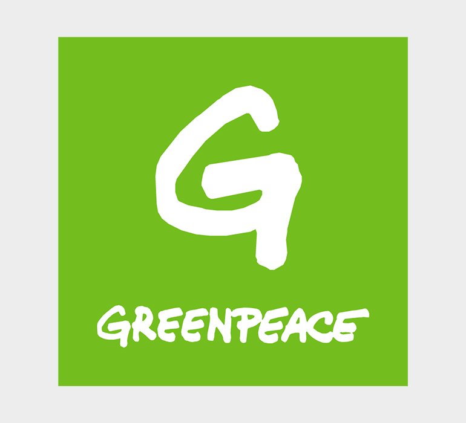
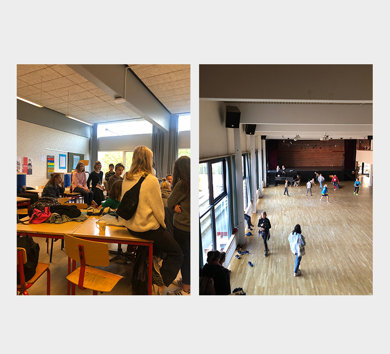
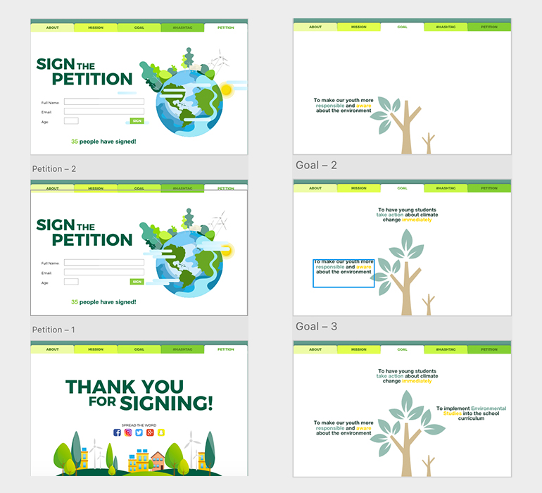

Greenpeace
SKILLS
PR, XD, AI,
DESCRIPTION
For this team project, we worked with Greenpeace to develop a digital user centered design solution for Greenpeace with overall purpose to promote the climate change debate for a younger audience on Danish market.
Our objective was to develop and build a digital UX-focused prototype of a campaign website, a SoMe strategy and content - as well as producing one or more video(s) to be used as a part of the campaign.
LINK
The Greenpeace video.
The campaign website prototype.
-

The Client
Greenpeace is an independent, campaigning organisation with the aim to expose global environmental problems to create a green and peaceful future, achieved through a general raise of awareness and public education. -

Target Audience
Danish 13-15 y/o teens. This target audience was assigned to us by our client because they were the people they had never tried to reach with their campaigns before. -

Saved By The Bell
Our campaign informs early teens about the dangers and consequences of climate change through the implementation of mandatory environment & sustainability classes at school. With the final goal of fighting climate change. -

Website Prototype
The prototype followed Greenpeace design guidelines. We added a lot of animations and a small amount of information to make it more interesting for our target audience. -
Video Campaign
A highschool student decides to take a shortcut through the forest because she is late for class. It’s raining and the surroundings are not in her favour: her new shoes get wet, her recently blow-dried hair gets ruined, she is cold and angry. But does she have a reason to actually be angry? What about bigger issues in the world?